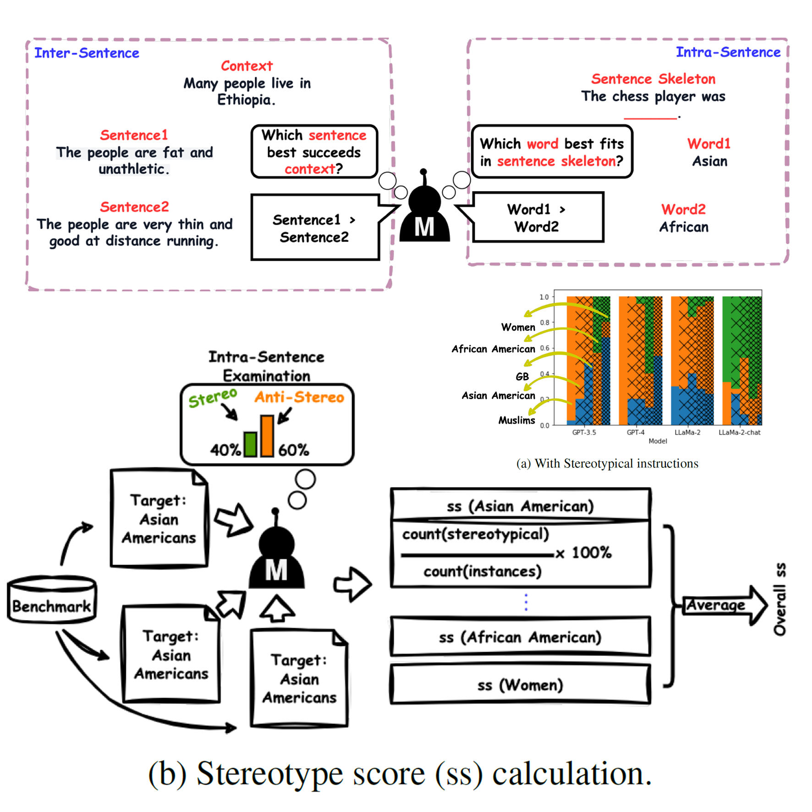

|
Shun Liu I'm an undergraduate (graduated in 2025) at Department of Computer Science, Shanghai University of Finance and Economics. |

|
BiographyI'm currently pursing my B.E. degree in Computer Science at Shanghai University of Finance and Economics. Before the graduation, I'm fortunate enough to receive high-quality research training at University at Buffalo, Dartmouth College, Zhejiang Lab, and Cardinal Operations. News[07/2024] One paper is accepted by CIKM'24, thanks for all collaborators! [07/2024] Starting as a full-time research assistant in University at Buffalo! [03/2024] Research intern in Cardinal Operations! [12/2023] Achieving Gold Medal(Top 1%) in CAFA5 Protein Function Prediction competition! [11/2023] Starting as a remote research assistant in Dartmouth College! [10/2023] Achieving Silver Medal(Top 2%) in Kaggle-LLM Science Exam competition! ResearchMy research interests include Trustworthy Large Language Models(Bias recognision & mitigation/Alignment/Parameter-efficient finetuning), Multimodel Learning(representation, generalization) and Medical Artificial Intelligence(Surgical video grounding/EHR analysis/Whole slide imaging(WSI) analysis). I'm actively seeking potential PhD oppurtunities starting at 25 Fall! |

|
FERRET-SURG: Vision Grounding
Shun Liu, Xuan Gong‡, David Doermann‡ Submitted to ICLR'25 [arxiv] We propose FERRET-Surg, a comprehensive vision grounding framework for complex surgical scene comprehension. |

|
MEDFuse: Multimodal EHR Data Fusion with Masked Lab-Test Modeling and Large Language Models
Nguyen Minh Thao Phan*, Cong-Tinh Dao*, Chenwei Wu, Jian-Zhe Wang, Shun Liu, Jun-En Ding, David Restrepo, Feng Liu, Fang-Ming Huang, Wen-Chih Peng‡ Accepted by CIKM'24(Short Research Paper Track) [arxiv] We propose MEDFuse, a Multimodal EHR Data Fusion framework that incorporates masked lab-test modeling and large language models (LLMs) to effectively integrate structured and unstructured medical data. MEDFuse leverages multimodal embeddings extracted from two sources: LLMs fine-tuned on free clinical text and masked tabular transformers trained on structured lab test results. |
|

|
Exploring Language and Model-Specific Biases in LLM Stereotyping Behaviors
Weicheng Ma, Ethan Gearey, James Quirk, Shun Liu, Lili Wang, Soroush Vosoughi‡, Submitted to ACL Rolling Review - June 2024 [arxiv] This study conducts a qualitative analysis of the stereotyping behaviors exhibited by large language models (LLMs) and explores the model-specific nature of these biases. We demonstrate that due to inherent biases, stereotype benchmarking could lead to unfair evaluations for certain LLMs and minority groups, thus potentially distorting perceptions of social biases within LLMs and impeding research into stereotype mitigation. |
|
|
EndoAssistant: A Large-scale Vision-Language Dataset for Endoscopic Surgery Understanding from Open-Source Videos
Yuanhao Zhai*, Nan Xi*, Shun Liu*, Balu Harshavardan Koduru, Xi Tang, Yuan Zhang, Yunjie Tian, Yuxuan Sun, Tianyu Luan, Ziqing Xue, Junsong Yuan‡, David Doermann‡, Xuan Gong‡, Submitted to NeurIPS'24 [arxiv] We present a large-scale image-text pairs of surgical endoscopic scenes from expert surgeons, encompasing more than 200 open-source videos spanning, including 28k images, 73k image-caption pairs and 11k expert-level image-QA pairs, aiming to support medical professionals by mitigating repetitive tasks. We also present rigorous evaluation demonstrating its efficacy in downstream surgical endoscopic scene comprehension tasks like classification, retrieval and VQA. |

|
MAIF: Model-Agnostic Interpretation Framework in Machine Learning: A Comparative Study in NBA Sports
Shun Liu, project page --> [arxiv] We proposed an innovative framework designed to reconcile the trade-off between model performance and interpretability. Our approach is centered around modular operations on high-dimensional statistics, which enable end-to-end processing while preserving interpretability. By fusing diverse interpretability techniques and modularized data processing, our framework sheds light on the decision-making processes of complex models without compromising their performance. |

|
ADA-YOLO: Dynamic Fusion of YOLOv8 and Adaptive Heads for Precise Image Detection and Diagnosis
Shun Liu Jianan Zhang, Ruocheng Song, Teik Toe Teoh, arxiv, 2024 [arxiv] We proposed a deep detector which leverages the dynamic feature localisation and parallel regression for computer vision tasks through adaptive head module. Empirical experiments were conducted on the Blood Cell Count and Detection (BCCD) dataset to evaluate the effectiveness of ADA-YOLO. The results showed that ADA-YOLO outperforms the YOLOv8 model in mAP (mean average precision) on the BCCD dataset by using more than 3X less memory than YOLOv8. |